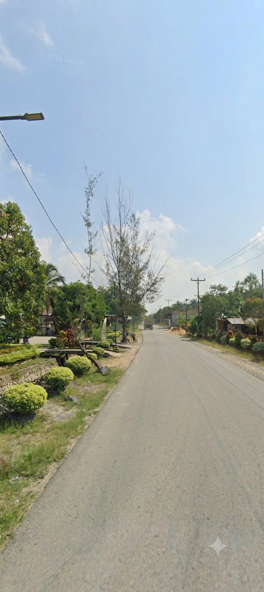

Sebuah pengenalan singkat mengenai lokasi, lingkungan, kehidupan masyarakat, dan potensi Desa Sungai Kelambu.

Desa Sungai Kelambu merupakan salah satu desa yang berada di Kecamatan Tebas, Kabupaten Sambas, Provinsi Kalimantan Barat.
Lingkungan desa menjadi bagian dari kehidupan masyarakat sehari-hari. Berbagai aktivitas sosial, pendidikan, keagamaan, serta kegiatan masyarakat berlangsung sebagai bagian dari kehidupan desa.
Website ini dibuat untuk memperkenalkan Desa Sungai Kelambu melalui informasi mengenai lingkungan, keindahan alam, fasilitas, budaya, dan dokumentasi desa.
Sungai Kelambu
Tebas
Sambas
Kalimantan Barat
Desa Sungai Kelambu berada di Kecamatan Tebas, Kabupaten Sambas, Kalimantan Barat.
Lingkungan dan masyarakat menjadi bagian penting dalam kehidupan desa.
Lingkungan pedesaan menjadi bagian dari kehidupan masyarakat dan memberikan suasana yang dekat dengan alam.
Aktivitas sosial dan kehidupan masyarakat menjadi bagian dari perkembangan desa.
Berbagai aktivitas sehari-hari menjadi gambaran kehidupan masyarakat desa.
Lingkungan dan masyarakat merupakan bagian dari potensi yang dapat dikembangkan.